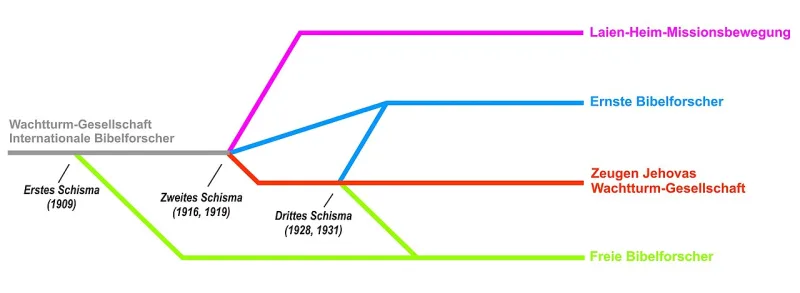

No good counter-argument has been published by the Watchtower.
Carl Olof Jonsson was a Swedish Witness. He was an elder and a pioneer.
In 1968 a man he was studying with asked him to prove the date 607 BCE. He went to the primary sources for years.
He found seventeen separate lines of evidence, and they all pointed to 587/586.
In 1977 he sent his study to Brooklyn. He expected them to engage with it.
He got evasion, then warnings. On June 9, 1982, he was disfellowshipped.
He published the work in 1983 as The Gentile Times Reconsidered. It is still the standard treatment.
Raymond Franz was on the Governing Body at the time. He later wrote what the study did to them.
"The weight of the evidence left us feeling somewhat disconcerted." The body voted to keep the doctrine anyway. Members were never told the challenge existed.
Jonsson was not expelled for arithmetic, but for apostasy. He was an elder circulating material against core teaching.
Any church would treat that as a discipline matter. The Society does not answer critics by name.
But it did publish its case twice. First the 1981 appendix in Let Your Kingdom Come, then the 2011 articles.
A religious body may define membership by belief.
The comparison misses the price. This body says its chronology is Jehovah's own timetable.
And disfellowshipping cuts a person off from their family. So asking whether 607 is true can cost you everything you have.
Forty years on, the book has never been answered in any scholarly journal.
"An elder spent years proving the date and found it was wrong. Do you know what happened to him?"

He was expelled for apostasy, not for math. Any church may discipline dissent.
From the Watchtower's view, Jonsson was not expelled for arithmetic. He was expelled for apostasy. He was an elder, and he began passing round material against core teachings. Any church would treat that as a discipline matter. A Catholic diocese would. So would a Presbyterian session.
The Society does not answer critics by name. That is policy. But it did publish its case in the end. First came the 1981 appendix in Let Your Kingdom Come. Then came the two-part articles of 2011. Defenders take those as the answer to Jonsson's line of argument. A church may define who belongs to it by what they believe.
Strong for you. Ask what happened to the elder who checked the date.
The story is documented from both sides. There is Jonsson's own file of letters. And there is the account of a Governing Body member of the time. The Watchtower has never disputed the order of events.
The steelman is real. Churches may discipline dissent. But it misses the gap in scale. This body says its chronology is Jehovah's own timetable. And disfellowshipping cuts off family ties. So the cost of asking whether 607 is true is total.
Forty years on, The Gentile Times Reconsidered has never been answered in any scholarly journal. The 2011 articles use its evidence without saying it exists. In conversation, ask a Witness what happened to the elder who checked.